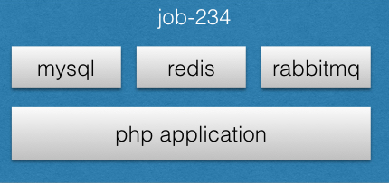
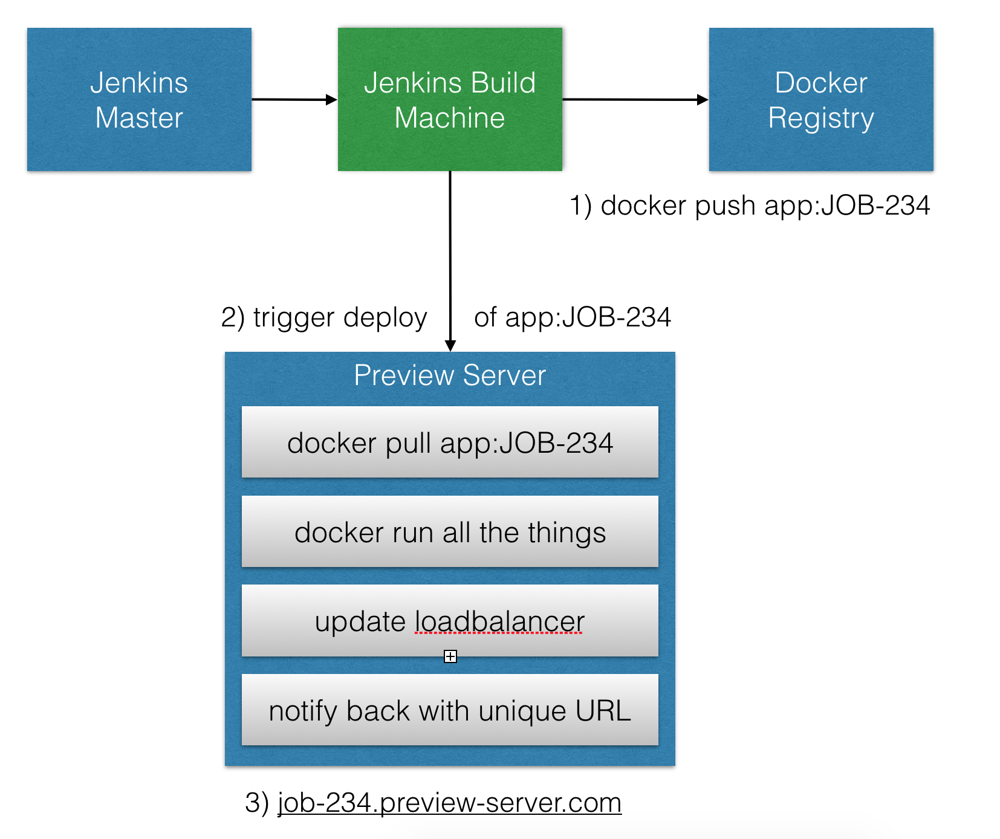

Dockerizing PHP CI Pipelines


Paul Dragoonis
- Full-Stack Software Consultant
- From Scotland
- OSS Contributor
- Conference Organiser
- I like Whisky :-)
My first day in Hamburg!
Consulting for www.kartenmacherei.de
Building Docker CI Pipelines
Continuous Integration
Automation of commands
Automation
ps aux | grep java | grep -v grep | awk '{print $2}' | xargs kill
while read in; do host "$in"; done < sites.txt | grep -iv "GOOGLE" | grep -E '1\.2\.3\.4|5\.6\.7\.8' | sed -e 's/has\ address\ 216.70.91.72//' | sed -e 's/has\ address\ 94.23.33.92//' | while read sites; do curl -sL -w "%{http_code} %{url_effective}\\n" "$sites" -o /dev/null; done | grep -ivE '4.*|5.*' | sed -e 's/200//' | sed -e 's/HTTP/http/'
Automation
kill-java-processes.sh
find-google-referrers.sh > google-referrers.txt
order-pizza-from-just-eat.sh ;-) (selenium)
What is a pipeline?
results moving through a series of steps from one side to the other.
What does a pipeline consist of?
- jobs, lots of jobs!
- that have their own single responsibility
What to put in your pipeline
- Quick initial checking
- lint checking
- unit tests
Perform thorough testing
- integration tests
- acceptance
- end-to-end testing
- security testing
- stress testing
Linking your pipeline together
Triggers
(sequencing of the pipeline)
- downstream triggers - what to trigger next
- upstream triggers - what to trigger before running current one
Kicking off your pipeline
- Commit triggered pipelines
- Manually triggered(parameterised) pipelines
Managing the Pipline
Build Pipeline Plugin

Delivery Pipeline Plugin

Maintaining your pipeline/jobs
JobDSL Plugin
job('BUILD') {
scm {
git('git://github.com/myorg/ci-scripts.git')
}
logRotator {
numToKeep 5
}
steps {
shell('/usr/local/run-tests.sh')
}
}
JobDSL Plugin
properties([
parameters([
choice(choices: 'qa\npreview\nstaging\nproduction', name: 'TARGET'),
choice(choices: 'quick\nfull', name: 'TEST_TYPE'),
])
])
if (env.TEST_TYPE == 'full') {}
if(env.TARGET == 'production') {
stage ('Production ') {
sh 'prod-smoke-tests.sh'
}
}
if (env.BRANCH_NAME == 'master') {
// .. custom master stuff
}
JobDSL Plugin
job('INTEGRATION TESTS') {
scm {
git('git://github.com/myorg/ci-scripts.git')
}
steps {
shell('run-integration-tests.sh')
}
}
Problems with standlone Jenkins
Scaling is hard, one slave per machine
One environment for your all your jobs, installed directly onto the jenkins host
CI env inconsistent from dev/staging/prod
Docker to the rescue

Easy to change the infrastructure, in your app's repo
UNIFIED ARCHITECTURE
What is docker?


Example Docker Setup

JobDSL Steps For Docker CI build
job('ALL TASKS') {
scm {
git('git://github.com/myorg/ci-scripts.git')
}
steps {
shell('build.sh')
shell('run-unit-tests.sh')
shell('run-integration-tests.sh')
shell('save-artifacts.sh')
shell('publish-image.sh')
shell('cleanup.sh') <-- always run this
}
}
Overview of docker pipeline

Overview of docker pipeline

Preview server

Time to dig deeper!
Anatomy of docker
Ordering of commands
Docker layering
Base Images
More stuff
Anatomy - Dockerfile
FROM ruby:2.2.6
WORKDIR /var/www
ENV NGINX_VERSION 1.9.9-1~jessie
COPY ./ /var/www/
Anatomy - Layering
FROM ubuntu:latest #This has its own number of layers say "X"
MAINTAINER FOO #This is one layer
RUN mkdir /tmp/foo #This is one layer
RUN apt-get install vim #This is one layer
Anatomy - Layering
$: docker history jenkins:1.609.1
IMAGE CREATED CREATED BY SIZE COMMENT
/bin/sh -c #(nop) COPY file:9ad619ae59ee04... 727 B
/bin/sh -c #(nop) ENTRYPOINT &{["/usr/loca... 0 B
/bin/sh -c #(nop) COPY file:46b354d30a79af... 1.28 kB
/bin/sh -c #(nop) USER [jenkins] 0 B
/bin/sh -c touch $COPY_REFERENCE_FILE_LOG ... 0 B
/bin/sh -c #(nop) ENV COPY_REFERENCE_FILE_... 0 B
/bin/sh -c #(nop) EXPOSE 50000/tcp 0 B
/bin/sh -c #(nop) EXPOSE 8080/tcp 0 B
/bin/sh -c chown -R jenkins "$JENKINS_HOME... 180 B
/bin/sh -c #(nop) ENV JENKINS_UC=https://u... 0 B
/bin/sh -c curl -fL http://mirrors.jenkins... 68.9 MB
Anatomy - Dockerfile
# Install System Dependencies
RUN echo "deb http://nginx.org/packages jessie nginx" >> /etc/apt/sources.list \
&& apt-get update \
&& apt-get install -y ca-certificates nginx=${NGINX_VERSION} nano wget git \
&& apt-get clean && apt-get purge \
&& rm -rf /var/lib/apt/lists/* /var/cache/apt/*
Anatomy - Dockerfile
# Install SSH keys
RUN chown -R build:build /home/build/ && chmod 0600 /home/build/.ssh/id_rsa
# Copy all app code
COPY . /var/www
USER build
RUN chmod -R go-w ~/.composer/vendor && chown -R root:root /app/vendor/ && \
chmod -R go-w /app/vendor/ && chown -R www:www /app/app/cache && \
# Framework specific setup commands
php app/console assets:install web --env=prod --symlink --verbose && \
chown www-data -R /var/www
# Run a healthcheck as user 'www'
USER www
RUN php app/console infra:healthcheck
# Accessible ports by other containers
EXPOSE 80 443
# Startup command, to keep the container running and alive
ENTRYPOINT /usr/sbin/nginx -g 'daemon off;'
build.sh
docker images | grep ${BUILD_NUMBER} \
| awk '{ value=$1":"$2; print value }' \
| xargs docker rmi -f || true
# bake in the build number to the preview yml file
sed -i 's/%BUILD_TAG%/${BUILD_NUMBER}/g' docker-compose.qa.yml
docker pull my-registry.com/php-webserver-base:latest || true
docker build --force-rm=true --pull --tag="registry.com/myapp:${BUILD_NUMBER}" .
Automating our automation - Makefiles
BASE = my-registry.com/myorg
NAME = myapp
TAG = $(TAG)
.PHONY: all build test shell run clean
all: build test
build:
docker build --pull --force-rm -t ${BASE}/${NAME}:${TAG} .
shell:
docker run -P --rm -it --name ${NAME} ${BASE}/${NAME}:$(TAG) /bin/sh
run:
docker run -P --rm --name ${NAME} ${BASE}/${NAME}:$(TAG)
clean:
docker rmi ${BASE}/${NAME}:$(TAG)
Automating our automation - Makefiles
#!/bin/bash
set -e
# Update Docker compose yaml with build key and number, of image built in build.sh
sed -i 's/%BUILD_TAG%/${BUILD_NUMBER}/g' docker-compose.ci.yml
echo "Unit Tests ..."
/usr/local/bin/docker-compose -f docker-compose.ci.yml run \
--rm --entrypoint="bash -c " application "/var/www/tests/run-unit-tests.sh"
docker compose for container orchestration
docker-compose.ci.yml
services:
application:
image: my-registry.com/myapp:%BUILD_TAG%
environment:
SYMFONY_ENVIRONMENT: test
entrypoint: ./opt/deployment/test/start.sh
ports:
- 80
volumes:
- ./opt/php/dev/php.ini:/usr/local/etc/php/php.ini
- ./opt/nginx/dev/default.conf:/etc/nginx/conf.d/default.conf
- ./build:/var/www/build
run-integration-tests.sh
#!/bin/bash
set -e
# Update Docker compose yaml with build key and number, of image built in build.sh
sed -i 's/%BUILD_TAG%/${BUILD_NUMBER}/g' docker-compose.ci.yml
# Boot up our stack in the background
echo "Creating containers ..."
/usr/local/bin/docker-compose -f docker-compose.ci.yml up -d
echo "Waiting for containers to be ready for test-suite ... this will take around one minute"
# wait until we see "fpm is running" then we're ready to begin our test suite
bash -c '/usr/local/bin/docker-compose -f docker-compose.ci.yml logs application | { sed "/nginx is running/ q" && kill -PIPE $$ ; }' > /dev/null 2>&1
# execute integration tests
docker-compose -f docker-compose.ci.yml run --rm \
--entrypoint="bash -c " application "bin/run-integration-tests.sh"
# clean up old volumes too
docker-compose -f docker-compose.ci.yml down -v
save-artifacts.sh
docker cp %%containerId%%:/var/www/public/screenshots ./build/screenshots
docker cp %%containerId%%:/var/www/build/phpunit/junit.xml ./build/phpunit/junit.xml
docker cp %%containerId%%:/var/www/build/phpunit/coverage-html/ ./build/phpunit-coverage
publish-image.sh
#!/bin/bash
set -e
docker push my-registry.com/myapp:${BUILD_NUMBER}
cleanup.sh
#!/bin/bash
set -e
docker rmi -f my-registry.com/myapp:${BUILD_NUMBER} || exit 0
Base Images
FROM my-registry.com/php-webserver-base:latest
# Copy all app code
COPY . /var/www
# Fix permissions
chown -R root:root /app/vendor/ && \
chmod -R go-w /app/vendor/ && \
chown -R www:www /app/app/cache/
# Now we begin to prep the boot process
USER www
# Run a healthcheck as user 'www'
RUN php artisan infra:healthcheck
# Accessible ports by other containers
EXPOSE 80 443
# Startup command, to keep the container running and alive
ENTRYPOINT /usr/sbin/nginx -g 'daemon off;'
Show and Tell Time!
- Please leave me feedback!
- T: @dr4goonis
- E: paul@dragoonis.com